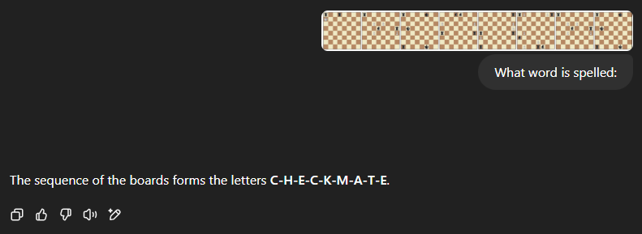

# Stack Overflow Challenge - Chessboard Letter Cipher
## Can you decode the cipher? AI can only deciper the simple ones!
<chess-cipher> uses the **squares** as pixels, creating **one letter** on a chess-board.
Can you decipher this letter? Hint: what are the moves?
Hold down CTRL key and click a board/word/letter to show the encoded letter(s)
I
## Encoding 8 letter words
Hover over a board to display the pieces on the big board above
TREASURE
## The whole alfabet
ABCDEFGHIJKLMNOPQRSTUVWXYZ
## ChatGPT has humor
It can not decipher all letters correctly and translates the **eight letter** word
TREASURE as:

## Source files
Files below are the live source files used on this site.
I tried to add some meaningful comments to these files.
A clean semantic HTML file
One BaseClass file defining base functions for all other Web Components
For a quick start you could use (Google) Lit
or any of its [61 alternative](https://webcomponents.dev/blog/all-the-ways-to-make-a-web-component/)) as
BaseClass.
Loads the origal **2020** Chessboard Web Component <chessmeister-board>
Extend it creating a new <chessmeister-board-letter>, (mainly) removing old 2020 sh*
Main <chess-cipher-board> Web Component, displaying letters using Chess Piece postions
<eight-letter-words> converting (8 letter) code words to UI displaying 8 boards
in <chess-cipher-board id="LETTERWORD" columns="8">TREASURE</chess-cipher-board>